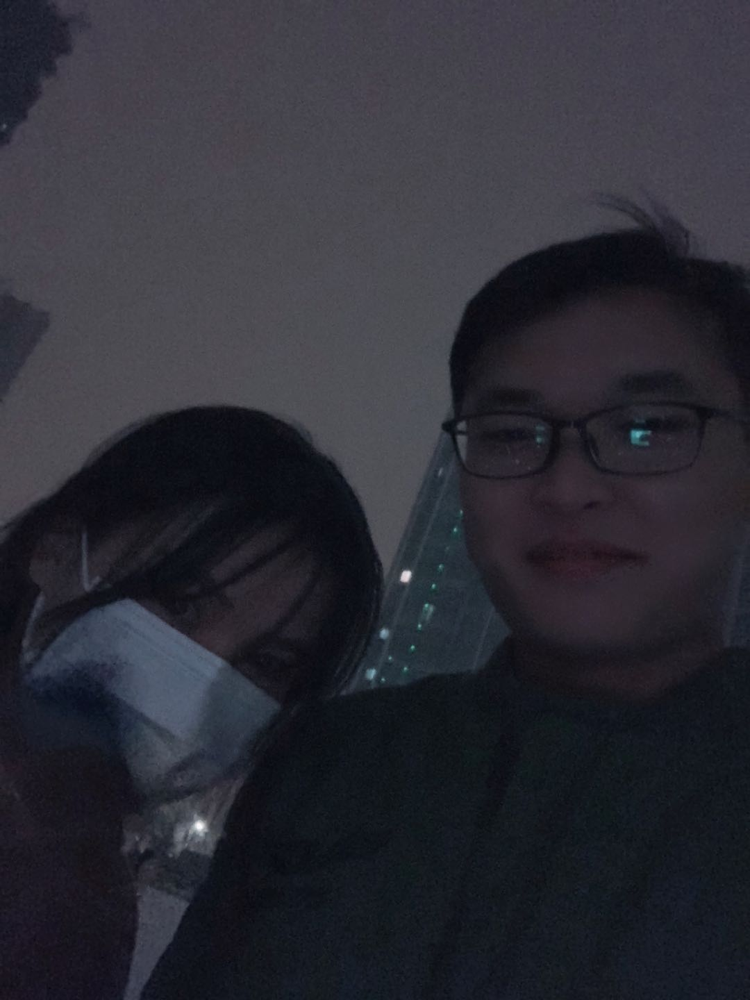

about-xiaoma
小马这些是我想说的话
当你说要分手的时候我正在上班其实是看到了消息我思考了很久我其实当时心情挺平静的 但是就是控制不住自己的眼泪，其实我是一个很念旧的一个人当习惯了一些生活可能突然丢失了整个人就感觉没有了目的，
我们两个的相处方式有些特殊 快乐的时候就很快乐 但是悲伤的时候就很悲伤，悲伤的时候很难以用某种方式去缓解只能是随着时间推移去磨灭这些痛苦，我不知道如何去处理你的一些悲伤的情绪 应该也是我不主动的原因，也不是所有人都会很好的去处理悲伤情绪，就算是一个开心果也有不开心的一天 所以你要一直保持住一个成年人的心态 当经历事情足够多的时候我们才会去珍惜那些我们失去的重要的东西,我们在一起快乐的时候很快乐 但是生活一直都在前进不可能一直都保持着这个快乐，我不会处理你的悲伤情绪但是我会尽我所能的去照顾你 所以我们经历了这么长时间到现在的点点滴滴，我很在意你 我们都会分享对方的生活 但是好像没有分享最痛苦最压力大的事情 而是选择短暂的逃避 ，不去讨论这些东西是我的错 我的逃避心理让你感到有压力 对不起
我这两天在家尽量去躲避晚上在我们熟悉的地方出没 回家基本就是直接睡觉，有时可能在某个熟悉的路 眼泪就不自主的滑落，你以前提分手我都会好像拼了命的去挽回，但是这一次我选择了不去挽回因为我知道你的压力，可能你觉得这一次的分手很随意一句 “好” 就否定了这段关系，其实感觉差不多就是一个从低到高又到低的一个过程 人的心态每年都会不一样 当初我的想法非常的坚定不知为什么现在却动摇了，当时想法 在北京继续奋斗做知识的沉淀然后回到老家过所谓稳定的生活，相比较你我在北京还是比较孤独的 除了公司的同事和偶尔相聚的朋友 我没有倾诉对象我也保持不去倾诉 因为我知道这样做是没任何作用的 这些东西会一直伴随着你，所以我都是在家里找到满足感 因为我最爱的人就在我的后方 我有目标，我一整天的目的就是回家见到..
上一次你跟我吵架 说让我找房子的时候我很伤心 当时我根本就不能闲下来所以我出门坐了一趟最远的公交车 在车上我就去想这件事情 我还能坚持多久 我还有多久能达到我的目标 去和你过上稳定的生活，但是我何尝不知道我们的时间经不起再去浪费了，但是当时你在我就要加倍的对你好 当天晚上我就喝的烂醉，在冬天我到家门口 0 点多在楼下又坐了许久…
可能是近几年来的经历使我的心态发生了改变，今年我经历的东西对我也算是一个成长 包括 每日关照的同事相继离职、年龄的压力、你的压力、你父母对你的压力 对于我来说最近的冲击力才是最大的时候 我相信这些会使我的成长速度很快 痛苦和成长是相同的，这就是男人需要背负的责任，今年对于我来说最痛苦的想必就是我做的这个决定， 我知道家里的压力和工作的压力都使你很疲累 ，
我想了想我觉得你还是回家考公务员或者去太原工作也好不要在北京继续下去了， 每日每夜的加班使你很累 没有了我 会使我更加的担心你， 我知道你很喜欢跟别人对比但是你是一个独立的 自主的人 不要去跟别人作比较这样会让自己活得更累，也就是为什么我选择了不挽回这段感情因我我觉得这是徒劳的 而且是对你没有好处的，我知道我自己是一个没有能力的人我没有能力去给你更好的生活，我在努力但是我发现我陷入了很头疼的境地 自己也没有钱在北京也买不起车买不起房子 别人在度假而 我们在加班努力，如果让你跟我一起回老家 我又没有把握让你过上好日子，如果你希望你的生活是别人的生活 回家吧 过好你的生活让自己更加充实起来 买一套属于自己的房子住进一个很大的房子 不需要跟别人合租共用一个卫生间 不需要每天每日加班 父母就在身边,
小马我们一起走了 2.3 年、27 个月、117 周、822 日、19729 个小时、1183765 分钟，我们经历了很多 我们一起去旅行 我们去相互了解 我们去相互理解 去做的改变，对我来说特别有意义 至少我们相爱 我还是那个当初爱着你的那个男孩，我特别喜欢你懵懵懂懂的样子 因为我觉得那样特别可爱，你喜欢吃辣 喜欢吃火锅 喜欢吃青笋和豆腐，我忘不了你点菜的时候的可爱语气，当你跟我吵架要打我 而我火气也大的时候 会去说你 说完你我看着你 内疚的我自己也哭了，其实我也特别喜欢跟别人对比 当我看着你跟我一起骑车时就想为什么你不能跟我一起坐在车里我开着车带着你出去玩 我很懊恼 就此我才要去更加的努力去挣钱去学习 给你带来更好的生活，我的所有 都是你的痕迹我微信收藏你之前发给我的视频 我的微信头像 我的朋友圈背景，你对于我来说就是一切，
我现在一个人在这个空荡荡的家里满满都是你的回忆这对我来说很痛苦，我现在在写着这个东西 看着夜晚的窗外我们曾经走过的西二旗大街 我骑车去西二旗接你买下西二旗烤冷面后回家的场面在我的脑海一直一直回响之所以痛苦是因为我们在一起太快乐了，其实都说在一起住久了是最难放下的 我现在经历到了这个，但是我不能，我们就好像被困在了这座城市
但是我做出了这个决定也是最痛苦的决定我相信这对我们彼此都是一个巨大的成长 我希望可以坚持过去，小马我说不出口的再见
And you let her go
酒杯已空，醉然凝视
希望有一天，你能让梦持续
但是梦想来的太慢，走的太快
闭上双眼，整个脑海都是你
繁星满天 你痴痴的望着天花板
又是一个无比寂寞空虚的无眠夜
如今你只得在梦里与她相见
And you let her go
Well you let her go
Original author: John Doe
Original link: http://yoursite.com/2020/08/09/about-xiaoma/
Copyright Notice: Please indicate the source of the reprint (must retain the author's signature and link)